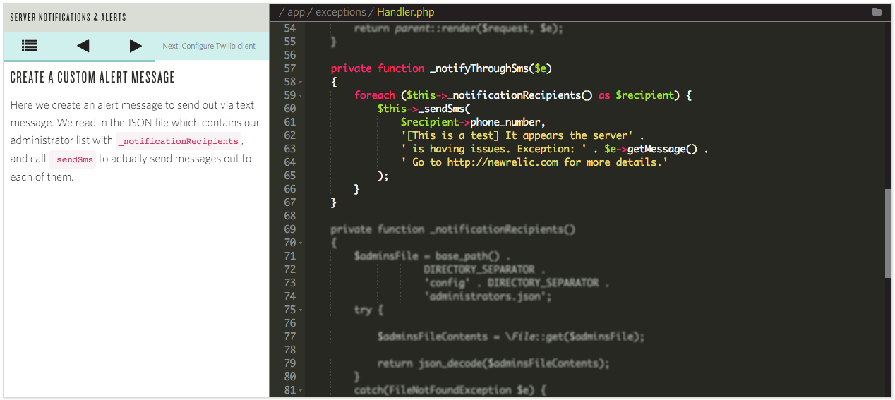

Thanks to our venue sponsor:

— Brian Moeskau (@bmoeskau)
— Jud White (@judson_white)
Thanks to our venue sponsor:
Thanks (again) to our beverage sponsor:
Thanks to our food sponsor:
Last version check — February 24, 2016:
 |
 |
 |
 |
 |
| 48 | 44 | 35 | 14 | 9 |
As of March 23, 2016:
|
|
|
|
|
| 48 49 |
35 36 |
44 45 |
14 | 9 9.1 (!) |
function foo (msg = 'hello') {
console.log(msg);
}
foo(); // 'hello'let a, b, rest;
[a, b] = [1, 2];
// → a = 1; b = 2
[a, b, ...rest] = [1, 2, 3, 4, 5];
// → a = 1; b = 2; rest = [3, 4, 5]
{a, b} = { a: 1, b: 2 };
// → a = 1; b = 2Proxies enable us to trap or intercept all of the operations on a target object and modify how this target operates.
Example use cases:
var birthDateValidator = {
set: function(obj, prop, value) {
if (prop === 'birthDate' && value < 21) {
throw new RangeError('Under age!');
}
obj[prop] = value;
}
};
var person = new Proxy({}, birthDateValidator);
person.birthDate = 1980;
console.log(person.birthDate); // 1980
person.yearOfBirth = 2001; // Throws exception:root {
--primary-color: blue;
--spacing: 10;
}
.heading {
color: var(--primary-color);
margin-top: calc(var(--spacing) * 1px);
margin-bottom: calc(var(--spacing) * 2px);
}Check out this demo
Event.timeStamp now has 5 microsecond resolutionAdded preview support for the VP9 video format
<picture>No more 350ms tap delay in mobile Safari!
width=device-width or user-scalable=notouch-action propertySafari's standards support has been... unimpressive
According to the Kangax ES2015 compatibility table:
However, if you look at the latest WebKit...
WebKit nightlies now support 98% of ES2015! What?!
So, here's my (hopeful) prediction...
Developers will rejoice!
Unique annotated code walkthroughs
Specific to Twilio's libraries, but great inspiration anyway
Play a Space-Invaders-like game while you're installing your node_modules!
Because... space invaders
Spend one day building WordPress sites for 10 deserving non-profits
Build a technology that will have a positive impact on the world, people, or environment
At this monthly breakfast get-together techies, developers, designers, and entrepreneurs learn from their peers through show & tell style presentations
Explore what's new in open source languages, tools, and techniques
It's a 2-day training in .Net, HTML5, JavaScript, EcmaScript, Web API and REST, Sharepoint, and other awesome technologies

/
#